The Royal Book of Oz by Ruth Plumly Thompson (originally attributed to L. Frank Baum), illustrated by John R. Neill. The Scarecrow investigates his family tree -- only to find that he's a king! Trouble is, he doesn't want the job. Can he overcome the plans of the evil princes and find his way back to Oz?
The Royal Book of Oz by Ruth Plumly Thompson (originally attributed to L. Frank Baum), illustrated by John R. Neill. The Scarecrow investigates his family tree -- only to find that he's a king! Trouble is, he doesn't want the job. Can he overcome the plans of the evil princes and find his way back to Oz?
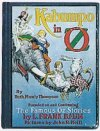
Kabumpo in Oz by Ruth Plumly Thompson, illustrated by John R. Neill. In the Gillikin kingdom of Pumperdink, Prince Pompa is given the task of finding the Proper Princess so he can marry her. Along with the royal court elephant, Kabumpo, he sets out to find her. Can he succeed? Will he even like her?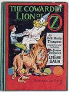
The Cowardly Lion of Oz by Ruth Plumly Thompson, illustrated by John R. Neill. The ruler of Mudge collects lions, but he wants one more -- the Cowardly Lion. Trouble is, he can't leave Mudge. So he sends out two visitors from America, circus clown Notta Bit More and orphan Bob Up, to go to the Emerald City to fetch him. Too bad if the Cowardly Lion doesn't want to be part of the collection!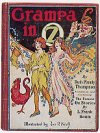
Grampa in Oz by Ruth Plumly Thompson, illustrated by John R. Neill. The kingdom of Ragbad is in big trouble, because the king has lost his head! So Prince Tatters and the old soldier Grampa set out to find the king's head, a princess, and a fortune. But why is an evil magician trying to stop them?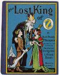
The Lost King of Oz by Ruth Plumly Thompson, illustrated by John R. Neill. Mombi must find Pastoria, Ozma's long lost father, before he suffers an even worse fate than the enchantment she put on him many years ago. And Ozma and the Wizard receive a mysterious message that set them into action as well. Can the lost king be found? Will he want his old job of ruling Oz back?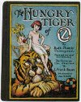
The Hungry Tiger of Oz by Ruth Plumly Thompson, illustrated by John R. Neill. The Kingdom of Rash has a new executioner -- the Hungry Tiger! But he doesn't want to eat anybody, especially his friend Betsy Bobbin. But when he is given the task of eating the young crown prince of Rash, he knows just what he must do -- escape and help the prince regain his throne.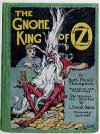
The Gnome King of Oz by Ruth Plumly Thompson, illustrated by John R. Neill. The Gnome King is up to no good, as usual. This time he has a whole mess of magic with which he intends to conquer Oz. Can the Patchwork Girl and a boy from Philadelphia stop him?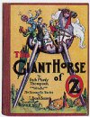
The Giant Horse of Oz by Ruth Plumly Thompson, illustrated by John R. Neill. Prince Philador of the Ozure Islands sets out to save his home from destruction by the sea monster Quiberon. Trot, meanwhile, is kidnapped by a man with wings to take care of -- Quiberon! To further complicate things, the Good Witch of the North has vanished! Can the Scarecrow, Herby the Medicine Man, and a living statue from Boston help them all and save the Ozure Islands?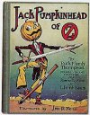
Jack Pumpkinhead of Oz by Ruth Plumly Thompson, illustrated by John R. Neill. On their way to the Emerald City, Jack and Peter (from The Gnome King of Oz) make a wrong term and land themselves in a whole mess of adventures -- and a plot by a wicked baron to overthrow Ozma! They set out to stop him, but when all of Jack's friends disappear into a magic sack, who can help him then?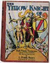
The Yellow Knight of Oz by Ruth Plumly Thompson, illustrated by John R. Neill. Sir Hokus of Pokes (introduced in The Royal Book of Oz) finds life in the Emerald City too tame, and sets out on a quest. He gets more than he bargained for, however, when he meets up with an explorer from America, an enchanted princess, and a sultan who wants to kidnap his friend the Comfortable Camel. But what secret is the sultan hiding, and how does it involve Sir Hokus?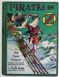
Pirates in Oz by Ruth Plumly Thompson, illustrated by John R. Neill. Once again, the Gnome King is trying to conquer Oz -- this time with the aid of pirates, renegade islanders, and an entire new kingdom of citizens. His old adversary Peter is back to try and stop him again, but what can Peter, a king who'd rather cook than rule, and a pirate who'd rather explore than plunder, do to stop him? Especially since the only way they have to get to Oz is a pirate ship -- and there is no water route to Oz!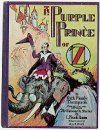
The Purple Prince of Oz by Ruth Plumly Thompson, illustrated by John R. Neill. Kabumpo is back, undertaking another mission for the royal family of Pumperdink -- who have all disappeared! He seeks help from the mysterious Red Jinn, but it is Kabumpo's assistant, Randy, who may have to save the day -- if he can keep anyone from finding out his secret.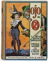
Ojo in Oz by Ruth Plumly Thompson, illustrated by John R. Neill. Ojo is kidnapped by gypsies, who think he is worth a fortune! Too bad nobody told that to Ojo. He is saved by a group of bandits, but isn't sure exactly whose side the bandit leader is on, or if he will ever get back to the Emerald City again.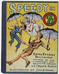
Speedy in Oz by Ruth Plumly Thompson, illustrated by John R. Neill. Speedy (introduced in The Yellow Knight of Oz) has found himself on Umbrella Island, a quaint little kingdom that floats in the sky. He is greeted warmly by the Umbrella Islanders, and has many adventures with them. But what terrible secret are the Umbrella Islanders hiding, and why is everyone so fascinated with his striking resemblance to Princess Gureeda?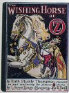
The Wishing Horse of Oz by Ruth Plumly Thompson, illustrated by John R. Neill. All hail Skamperoo, the King of Oz! What? Dorothy doesn't remember this! What happened to Ozma, and the Wizard, and Glinda, and all the other rulers and most important people in Oz? Nobody has ever even heard of them! Dorothy goes out to seek answers, and the adventure will take her to some strange places indeed.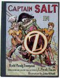
Captain Salt in Oz by Ruth Plumly Thompson, illustrated by John R. Neill. Now that he's no longer a pirate, Captain Salt (introduced in Pirates in Oz) is the Royal Explorer of Oz. What adventures await him and his stalwart crew on the high seas? Who is the boy they find shipwrecked on a mysterious island? And why doesn't anybody want him to return the boy to his rightful home?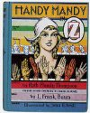
Handy Mandy in Oz by Ruth Plumly Thompson, illustrated by John R. Neill. Mandy is a shepherdess with seven hands -- and she's lost in a strange country called Oz. She gets mixed up in court intrigue in the little kingdom of Keretaria, and eventually tries to find the rightful king. But she stumbles across a plot by an evil Wizard to conquer Oz -- with the aid of the Nome King!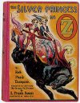
The Silver Princess in Oz by Ruth Plumly Thompson, illustrated by John R. Neill. Randy and Kabumpo are off on an adventure to see their old friend, the Red Jinn. Along the way they have many adventures and meet the beautiful Silver Princess from Anuther Planet. But when they arrive at the Red Jinn's palace, they find that his throne has been usurped by an ambitious courtier -- who captures the whole party. Can they find the Red Jinn and help him regain his throne?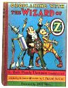
Ozoplaning with the Wizard of Oz by Ruth Plumly Thompson, illustrated by John R. Neill. The Wizard has invented a new flying machine called an Ozoplane. He shows off the two prototypes to his oldest friends, but when the Tin Woodman accidentally launches one, it's up to the Wizard to go after him in the second one. They all get together again in a mysterious city in the sky, but the ruler is not very friendly, and thinks the land below him sounds it might also make a nice place to rule, with the help of the Ozoplanes. Can he be stopped? Yankee in Oz by Ruth Plumly Thompson, illustrated by Dick Martin. Yankee, an American astro-dog, and Tompy, a drummer from Pennsylvania, both land in the same lake in the Winkie Country of Oz. They pool their efforts to get home, but are recruited to find a missing princess. If they don't find the princess-napper, will Ozma be the next to be dragged to his cave?
Yankee in Oz by Ruth Plumly Thompson, illustrated by Dick Martin. Yankee, an American astro-dog, and Tompy, a drummer from Pennsylvania, both land in the same lake in the Winkie Country of Oz. They pool their efforts to get home, but are recruited to find a missing princess. If they don't find the princess-napper, will Ozma be the next to be dragged to his cave?
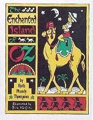
The Enchanted Island of Oz by Ruth Plumly Thompson, illustrated by Dick Martin. David Perry is surprised when he speaks to a camel at the circus -- who answers back! Together they find their way to Oz and many adventures, but when the flying island of Kapurta runs away with them, can they help the Kapurtans settle down again and get home?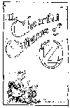
The Cheerful Citizens of Oz by Ruth Plumly Thompson, illustrated by Rob Roy MacVeigh. A collection of Thompson's light verse about the Oz characters.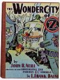
The Wonder City of Oz, written and illustrated by John R. Neill. Jenny Jump jumps so far, she lands in Oz. There she decides to challenge Ozma to an oz-lection, to see who should be queen of Oz. But as soon as she opens her magic turn-style shop, Jenny finds herself in a mess of adventures. Can she make her way back to the Emerald City in time for the oz-lection? And who will win?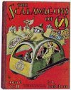
The Scalawagons of Oz, written and illustrated by John R. Neill. The Wizard's new inventions are a great way for the Ozites to travel around Oz -- and into trouble! When a mysterious figure gets into the scalawagon factory and starts causing mischief, it may take everyone's resources to save the scalawagons.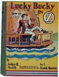
Lucky Bucky in Oz, written and illustrated by John R. Neill. Bucky Jones, a sailor's son from Long Island, meets up with his cousin, Davy. Together, they make their way to Oz and have a number of adventures on their way to the Emerald City.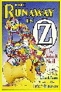
The Runaway in Oz by John R. Neill, illustrated by Eric Shanower. The Patchwork Girl is tired of life in the Emerald City -- so she runs away! She meets up with many new friends, and finds a castle in the air. So why is it overrun with pirates?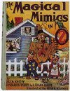
The Magical Mimics in Oz by Jack Snow, illustrated by Frank Kramer. Ozma and Glinda are away on business, so Dorothy and the Wizard are in charge of the country for a few days. But an ancient enemy of Oz finds a loophole in their enchantment that allows them to finally escape their prison and conquer Oz -- since they look just like Dorothy and the Wizard! Can the real Dorothy and Wizard save Oz?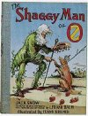
The Shaggy Man of Oz by Jack Snow, illustrated by Frank Kramer. The Shaggy Man's Love Magnet has been broken, so he takes it to the magician who created it to be repaired. He finds, however, that the magician is not as kindly as he seems, since he's kidnapped two children from Buffalo, New York. Can the Shaggy Man get the children home safely and stop the magician's plans? Who's Who in Oz by Jack Snow, illustrated by John R. Neill, Frank Kramer, and Dirk. A directory of Oz characters from thirty-nine Oz books, plus information on the authors and illustrators, and book summaries.
Who's Who in Oz by Jack Snow, illustrated by John R. Neill, Frank Kramer, and Dirk. A directory of Oz characters from thirty-nine Oz books, plus information on the authors and illustrators, and book summaries.
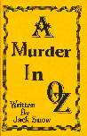
A Murder in Oz by Jack Snow. If nobody can die in Oz, how is it that someone has killed Ozma?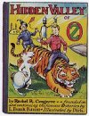
The Hidden Valley of Oz by Rachel R. Cosgrove, illustrated by Dirk. Jam flies to Oz with his giant kite, and lands in the Hidden Valley of Oz, which is overrun by a giant. The citizens of Hidden Valley help Jam escape and ask him to find help to overcome the giant, but what can one small boy do? The Wicked Witch of Oz by Rachel Cosgrove Payes, illustrated by Eric Shanower. Singra, the Wicked Witch of the South, has just woken up form her hundred year nap. And she wants revenge on Glinda the Good, who defeated her a century ago. It's just too bad if Dorothy, the Scarecrow, and anyone else gets in her way...
The Wicked Witch of Oz by Rachel Cosgrove Payes, illustrated by Eric Shanower. Singra, the Wicked Witch of the South, has just woken up form her hundred year nap. And she wants revenge on Glinda the Good, who defeated her a century ago. It's just too bad if Dorothy, the Scarecrow, and anyone else gets in her way...
 Oz-Story No. 6, edited by David Maxine. Anthology that includes "Rocket Trip to Oz" by Rachel Cosgrove Payes, a tale of Jam and Percy from The Hidden Valley of Oz, and The Rundelstone of Oz by Eloise Jarvis McGraw.
Oz-Story No. 6, edited by David Maxine. Anthology that includes "Rocket Trip to Oz" by Rachel Cosgrove Payes, a tale of Jam and Percy from The Hidden Valley of Oz, and The Rundelstone of Oz by Eloise Jarvis McGraw.
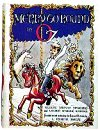
Merry-Go-Round in Oz by Eloise Jarvis McGraw and Lauren Lynn McGraw, illustrated by Dick Martin. Robin Brown manages to grab the brass ring at the county fair's merry-go-round -- and he and his horse are whisked off to Oz. Meanwhile, Dorothy and the Cowardly Lion head off to order Easter goodies from the Easter Bunny, and Prince Gules of Halidom sets off to find the missing magic circlets of the kingdom. When all three parties get together, they find that their goals are not as different as they might at first appear.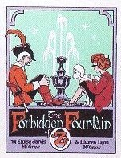
The Forbidden Fountain of Oz by Eloise Jarvis McGraw and Lauren Lynn McGraw, illustrated by Dick Martin. Emeralda Ozgood wants to make some limeade so she can buy a cookie at the Emerald City's Clover Fair. Little does she know, however, that the water she uses is from the Fountain of Oblivion, which makes anyone who drinks it forget everything. Nor does she know that her only customer will be Ozma, queen of Oz... The Rundlestone of Oz by Eloise Jarvis McGraw. There's great excitement in the Gillikin town of Whitherwood -- the Troopadours have come to town! But when the rest of the troupe of entertainers disappears, one of the marionettes, Pocotristi, enters the service of the Whithered, the local magician. All doesn't seem right to Poco, however, and he suspects the Whithered is up to something. Can he find the legendary Rundlestone of Oz to help him solve the mystery and find his friends?
The Rundlestone of Oz by Eloise Jarvis McGraw. There's great excitement in the Gillikin town of Whitherwood -- the Troopadours have come to town! But when the rest of the troupe of entertainers disappears, one of the marionettes, Pocotristi, enters the service of the Whithered, the local magician. All doesn't seem right to Poco, however, and he suspects the Whithered is up to something. Can he find the legendary Rundlestone of Oz to help him solve the mystery and find his friends?
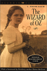
The Wizard of Oz by L. Frank Baum, introduction by Eloise Jarvis McGraw. A new edition of the book, with an introduction by another Royal Historian.
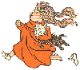
"There's no place like the home page..."